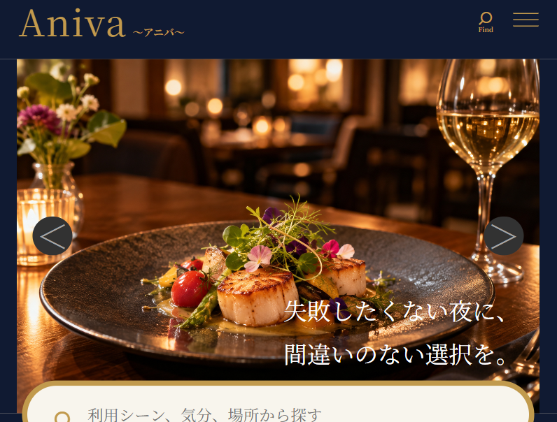

ハンバーガーメニュー
スマートフォンでも快適に ナビゲーションできるよう実装。
Web Design / Responsive Design
特別な日のレストラン選びを、
もっと身近に。

「特別な日のレストラン選び」をテーマにした、 架空のレストラン予約サービスを制作しました。
高級感や特別感を感じられながらも、 重くなりすぎない 「上品ポップ」をコンセプトにしています。
スマートフォンでも快適に ナビゲーションできるよう実装。
複数の魅力を伝えられる スライド表示を実装。
利用シーン・エリア・条件から 探しやすい検索機能を実装。
シーン別のタグで目的に合った 店舗をすぐに見つけられるように。
スマートフォンからPCまで 快適に閲覧できるよう調整。
クライアントの要望や ターゲットを整理し、 必要な機能を検討。
Figmaでデザインカンプを作成。 配色やレイアウトを設計。
Photoshopでアイコンなどの 素材を切り抜き・加工。
VS CodeでHTML・CSSを 実装。
動きのあるUIや検索・絞り込み 機能を実装。
スマートフォンを基準に制作後、 PC画面でも崩れないよう調整。
ユーザーが料理だけでなく、 店舗の雰囲気や利用シーンから 「自分に合うお店」を選べることを意識しました。
ファーストビューではレストランの雰囲気が伝わる 写真を使用し、その下に「デート」「女子会」 「記念日」などのシーン別導線を配置しています。
また、おすすめレストランでは写真・評価・ 利用シーンなどをカード形式でまとめ、 店舗を比較しやすいUIを意識しました。
Special Day
Special Restaurant.